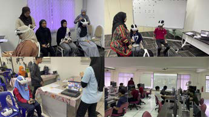
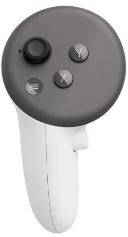
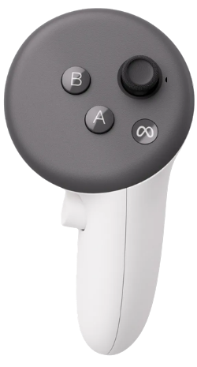
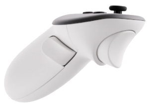
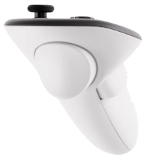

About
the project
The project “Enhancing Educational Equity and Engagement through AI-Driven Metaverse Environments (EduSphere)” was launched to address a practical problem in education.
Many valuable learning experiences, such as simulation, community exposure, role-play, expert interaction, and technology-supported practice, are difficult to scale through conventional classroom teaching alone.
The project therefore used generative AI and metaverse technologies to make scenario-based learning more accessible, interactive, and adaptable. Instead of only receiving explanations or completing isolated classroom tasks, students would enter virtual learning environments where they could explore simulations, interact with GPT-powered avatars, complete quizzes and tasks, and receive contextual feedback.
The original vision was to build EduSphere as an AI-driven metaverse learning city for Malaysia. The project focused especially on educational equity, including access for B40 and indigenous learners, while also supporting wider student groups across higher education and community settings. The aim was not only to introduce VR or AI as novel tools, but to test whether autonomous AI agents could support engagement, perceived learning performance, AI literacy, and inclusive participation.

A UK–Malaysia
collaboration
The project was designed around five main objectives.
Develop AI-driven avatars and dynamic learning pathways within a metaverse environment.
Create personalised and immersive learning experiences through GPT-supported interaction.
Make advanced educational tools more accessible to underrepresented and marginalised learner groups.
Connect service learning, local content, and community-facing education through reusable metaverse simulations.
Evaluate learner experience through mixed methods, including surveys, task data, engagement metrics, and qualitative feedback.
Over the project period, the original vision was translated into the EduSphere Five-Zone Framework. The framework organizes AI-supported metaverse learning into five zones: Tech District, Green Zone, Cultural Quarter, Health Plaza, and Business Hub.
By the implementation stage, EduSphere had reached 1,379 students and delivered 17 simulations across the five zones, demonstrating the transition from proposal-stage design to practical deployment.
The EduSphere Five-Zone Framework
A key output of the project was the EduSphere Five-Zone Framework. It was developed to organize AI-supported metaverse learning in Malaysia and to guide the design, deployment, and evaluation of simulations across different learning contexts.
The framework treats EduSphere as a teaching model, not simply as a set of VR simulations with AI avatars.
Students enter a virtual or semi-virtual environment, complete context-based tasks, interact with GPT-powered avatars, receive feedback, and generate evidence through surveys, platform records, task completion data, interaction logs, and qualitative responses.
metaverse model
A learning goal is translated into a scenario, placed in a metaverse scene, and supported by avatars and task-based activities. Student responses and platform evidence then show how the simulation was used and where revision is needed.
Seven core
components
Scenario-based learning design
Roles, goals, tasks, quizzes, decisions, feedback, and reflection.
Metaverse VR/non-VR simulations
Immersive and accessible learning spaces that support classroom, workshop, community, and remote deployment.
GPT-powered avatars
Interactive agents that act as tutors, guides, experts, community members, patients, customers, audience members, or feedback providers.
Local and course-grounded content
Learning materials, community knowledge, cultural examples, and subject-specific information used to keep simulations relevant.
Prompt templates
Structured instructions that define avatar roles, tone, learning goals, response style, and interaction boundaries.
Inclusion and access design
Learning pathways that support different student groups, including B40 learners, indigenous communities, and students with different levels of digital confidence.
Learning and interaction evidence
Survey outcomes, task completion, GPT pathways, interaction logs, student feedback, and human evaluation of AI responses.
Together, these components provide a reusable structure.
Why the
framework matters
The framework links learning objectives, scene design, avatar roles, prompt templates, task evidence, and learner feedback. The same metaverse platform can support different learning domains, but each zone needs its own pedagogical logic.
Instructors can start with a zone, define the learning outcome, create a scenario, assign avatar roles, design tasks, and decide what evidence to collect.
A single metaverse platform can support different disciplines when simulations, avatars, prompt templates, and evaluation methods are reusable.
Ease of use, perceived performance, usefulness, learning intent, task completion, GPT pathways, interaction logs, and qualitative feedback can be examined within a shared structure.
EduSphere can support university students, B40 learners, and Orang Asli learners while still allowing each simulation to be adapted to local content, language needs, and community contexts.
Project
gallery
Sessions, site visits and simulations from the Malaysia implementation, 2025–2026.
Beyond proof
of concept.
Malaysia implementation, January 2025 to July 2026.
By the July 2026 reporting point, EduSphere had exceeded its main implementation targets for student reach and simulation development.
KPI achievement
{{ fd.title }}
{{ fd.body }}
EduSphere proved most effective as a flexible learning framework rather than a single fixed intervention, deriving value from the combination of immersive simulations, GPT-powered avatars, structured tasks, and multiple access modes.
Different zones required distinct design priorities: communication zones benefited from realistic interaction, cultural zones from respectful and locally grounded content, sustainability zones from concrete examples and vocabulary scaffolding, and technical zones from step-by-step guidance.
“I felt like I was truly inside the environment, which helped me focus better and use the language more naturally.”A003 · Immersive engagement
“The metaverse could simulate real-world situations without physical or geographical constraints.”A020 · Pedagogical potential
“It was very difficult to focus my eyes, and I had a feeling of visual fatigue.”A007 · Physical discomfort
Zone-level
comparison
Mean self-report scoresGreen Zone used a different outcome structure focused on perceived social presence, language confidence, and usefulness of the AI avatar. Health Plaza remained part of the five-zone framework, but full zone-level outcome data should be added once confirmed.
Thematic
analysis
Key findings from student reflections (N = 22), reported in the ISPF grant presentation.
Found the experience novel, exciting, with a strong sense of presence. More natural language use and better focus. Increased enjoyment and participation, especially for shy learners.
Dizziness or motion sickness (roller coaster sensation). Eye fatigue, blurry fonts, difficulty focusing. A feeling of disconnection after removing the headset.
Lagging, system crashes, unclear instructions. Font issues, unresponsive buttons, heavy headset. Non-intuitive controls disrupted lesson flow.
Real-world simulation for language and cultural exchange. AI translation, personalised learning paths, interactive avatars.
Desire for better customisation and smoother interactions. Compared Classlet to VRChat and Roblox for graphics and UX.
Planned conference outputs, including ICEIT, ICETT, and IEEE EDUCON.
Future development
and implementation
Development
priority by zone
Strengthen scenario realism, improve feedback quality, and create reusable communication templates that teachers can adapt for different courses and learner groups.
Strengthen local grounding, improve avatar sensitivity to cultural context, and create reusable templates for respectful cultural inquiry and community-based learning.
Expand the number of Green Zone scenarios, strengthen vocabulary scaffolding, and create reusable sustainability templates that teachers can adapt for different learner groups and environmental topics.
Strengthen technical scaffolding, make abstract processes more visual, and create reusable templates for AI-supported inquiry, data interpretation, and system diagnosis.
The full development and scaling plan will be added from the final report.
Tools
behind EduSphere
EduSphere is a teaching model rather than a single device. It runs on a metaverse platform and can be delivered with or without a VR headset. These are the tools used in this project.
Soqqle
Soqqle provided the metaverse engine, scene configuration, and prompt-template support.
VR and desktop
Flexible dual-mode access proved essential for inclusion. VR sessions in this project used the Meta Quest 3, shown in the next sections.
What to expect
The scene and experience
About the journey
Today, you are stepping into a digital simulation of an Orang Asli (Temuan) village. Your objective is to explore the heritage site, observe the environment, and uncover cultural knowledge about the Temuan community.
Look everywhere
Look Everywhere! Look up at the sky, down at the ground, and behind you. The metaverse surrounds you 360 degrees. Take your time to appreciate the details of the village architecture and environment.
Understanding
the VR screen
When you put on the headset, here is what you should look out for inside the simulation:
Action Buttons
Look for buttons like "Complete" at the bottom of the text boxes so you can keep exploring.
Floating or Glowing Icons
If an object is glowing or has a floating icon above it, it means you can interact with it! Point your laser at it and pull the Trigger button.
Throughout the simulation, find “!” to complete tasks and see dialogue.
Your Virtual Hands & Laser Pointers
You will see digital hands or a bright laser beam extending from your controllers. Use this beam to "point" at things you want to interact with.
To grab and move items, use the trigger and thumbstick simultaneously
Things
to do
Study the Controls
Look at the controller guide below so you are ready to jump right in.
Keep your Glasses On
The Meta Quest 3 headset fits comfortably over most standard frames.
Wait for Instructions
Do not enter the VR play area until instructed by the facilitators. We will help you put on and adjust the headset.
Health & Safety
Warnings
Virtual Reality is highly immersive, but it can sometimes trick your brain.
Some people may feel mild dizziness, nausea, or disorientation (similar to motion sickness) during your first time in VR.
If you feel dizzy, sweaty, or nauseous, CLOSE YOUR EYES immediately and take off the headset. Do not try to "push through it."
Please remain seated. Do not walk around the physical room while wearing the headset.
Let our facilitators know before starting if you have a history of epilepsy, severe motion sickness, inner-ear issues, or if you are pregnant.
Mastering
the controls
Move and Rotate
Use your thumb to interact with the thumbstick on both the left and right controllers. In the simulation, use this to move forward, backwards, left, and right.


Move and Rotate
Use your thumb to interact with the thumbstick on both the left and right controllers. In the simulation, use this to rotate left or right.

Grab
Squeeze this button to grab, hold, or pick up virtual objects. Let go to drop them.
Click and Select Button
Use this for Selecting and Clicking. Aim your laser pointer at an object or a menu button and pull the Trigger to click it.
